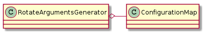

The Rotate¶
A command-line interface to run the rotate command remotely.
SIGKILL = 9
PROCESS = 'rotate'
RotateError¶

class RotateError(CommandError):
"""
An error in the rotation
"""
# end class RotateError
RotateArgumentsGenerator¶
This is a class intended for the RotateCommand.__call__. It generates arguments based on what settings it gets. It is only concerned with the argument string(s) needed to be sent to the rotate command. Something else will have to make sure that the right arguments are sent to the right table.

| RotateArgumentsGenerator(configuration, section) | RotateArgumentsGenerator for the rotate command | ||
| RotateArgumentsGenerator.configuration | |||
| RotateArgumentsGenerator.section | |||
| RotateArgumentsGenerator.angles | List of angles from the configuration | ||
| RotateArgumentsGenerator.argument_strings |
|
||
| RotateArgumentsGenerator.values_string |
|
||
| RotateArgumentsGenerator.booleans_string |
|
||
| RotateArgumentsGenerator.base_arguments | A Rotate BaseArguments object |
The basic idea (assuming you only have one table) is that you would traverse the argument_strings and send them to the call.
rotate = RotateCommand(connections=connection)
parameters = RotateArgumentsGenerator(configuration, section='table1')
for arguments in parameters.argument_strings:
command(arguments)
This is not nearly so straight-forward in the builders themselves since the rotate is called in between the iperf calls... how does this work?
RotateCommand¶
| RotateCommand(connections[, retries]) | A class to issue a remote ‘rotate’ command (older version for pre-Cameron turntables) | ||
| RotateCommand.kill | |||
| RotateCommand.kill_process() | Kills rotate processes over the connection | ||
| RotateCommand.__call__(parameters[, ...]) |
|
||
| RotateCommand.check_errors(line) |
|
This is the original rotate command when the tables were giving feedback for their positions.
The RotateCommandUsurper¶
This is the newer rotate command (as of November 3, 2014) to use the replacement turntables built with raised platforms to temper the effects of electro-magnetic interference created by the turntable’s motor.

| RotateCommandUsurper(connections[, retries]) | Command to rotate turntables |
| RotateCommandUsurper.__call__(parameters[, ...]) | Main interface to rotate tables |
| RotateCommandUsurper.rotate(connection[, ...]) | Assumes that the command will block until done and nothing unusual happens |
# this is for the builder to set the name of the parameters
ROTATE_USURPER_NAME = 'rotate_usurper'